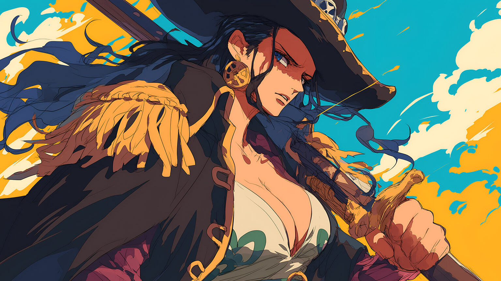
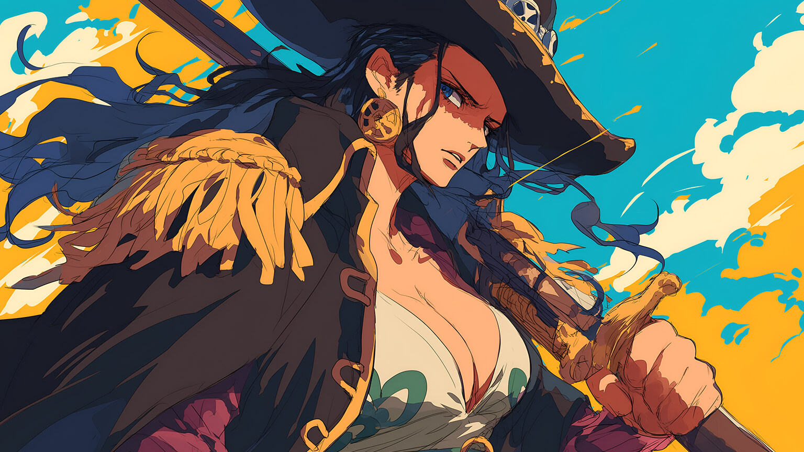

Monkey D. Luffy
O capitão da tripulação, Luffy é impulsivo, corajoso e determinado a encontrar o One Piece e se tornar o Rei dos Piratas. Ele possui a habilidade do Gomu Gomu no Mi, que torna seu corpo elástico como borracha.
Roronoa Zoro
O espadachim da tripulação, Zoro sonha em se tornar o maior espadachim do mundo. Ele é extremamente leal a Luffy e é conhecido por sua incrível força e habilidade com três espadas.
Usopp
O atirador da tripulação, Usopp é um grande contador de histórias e inventor. Ele é inicialmente covarde, mas aos poucos se torna mais corajoso e habilidoso no combate à distância.
Nami
A navegadora e cartógrafa do grupo, Nami é inteligente e habilidosa em manipular o clima para ajudar em combate. Ela tem uma grande paixão por dinheiro e um forte senso de responsabilidade.
Sanji
O cozinheiro da tripulação, Sanji é um excelente lutador que usa apenas as pernas em combate para proteger suas mãos de cozinheiro. Ele é um cavaleiro com um ponto fraco por mulheres bonitas.
Tony Tony Chopper
O médico da tripulação, Chopper é uma rena que comeu a Hito Hito no Mi, que lhe permite se transformar em várias formas, incluindo uma forma humana. Ele é extremamente doce e inocente.
Nico Robin
A arqueóloga da tripulação, Robin possui o poder da Hana Hana no Mi, que permite que ela faça partes do seu corpo brotarem de qualquer superfície. Ela é calma, inteligente e busca descobrir a verdade sobre o Século Perdido.
Franky
O carpinteiro da tripulação, Franky é um ciborgue com uma personalidade extravagante e habilidades mecânicas impressionantes. Ele é responsável por construir o segundo navio da tripulação, o Thousand Sunny.
Brook
O músico da tripulação, Brook é um esqueleto vivo devido ao poder da Yomi Yomi no Mi, que lhe permite reviver após a morte. Ele é excêntrico, adora música e tem um forte senso de humor.